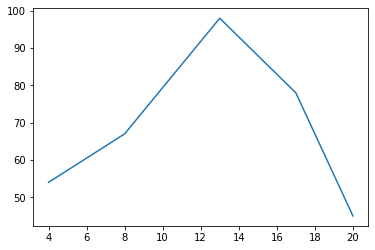
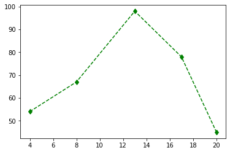

Ayudantía 1: Introducción a python¶
1. Librerías¶
import numpy as np
import pandas as pd
import matplotlib.pyplot as plt
2. Importar datos¶
df = pd.read_csv("/home/felix/Dropbox/Computational_Economics/Intro_python/intro_python/ayudantia1.csv")
df.head()
| Periodo\tTasa de desempleo\tPIB a precios corrientes | |
|---|---|
| 0 | 01/03/10\t9.23\t |
| 1 | 01/06/10\t8.66\t |
| 2 | 01/09/10\t8.12\t |
| 3 | 01/12/10\t7.21\t |
| 4 | 01/03/11\t7.55\t |
#Modificar separador del archivo de texto (",", ";", "\t")
df = pd.read_csv("/home/felix/Dropbox/ayudantia1.csv", sep="\t")
df.head()
# df.dtypes
| Periodo | Tasa de desempleo | PIB a precios corrientes | |
|---|---|---|---|
| 0 | 01/03/10 | 9.23 | NaN |
| 1 | 01/06/10 | 8.66 | NaN |
| 2 | 01/09/10 | 8.12 | NaN |
| 3 | 01/12/10 | 7.21 | NaN |
| 4 | 01/03/11 | 7.55 | NaN |
#Revisar encabezado
df.head(5)
| Periodo | Tasa de desempleo | PIB a precios corrientes | |
|---|---|---|---|
| 0 | 01/03/10 | 9.23 | NaN |
| 1 | 01/06/10 | 8.66 | NaN |
| 2 | 01/09/10 | 8.12 | NaN |
| 3 | 01/12/10 | 7.21 | NaN |
| 4 | 01/03/11 | 7.55 | NaN |
#Cambiar nombre de columnas del dataframe
df2= df.rename(columns = {'Tasa de desempleo': 'desempleo', 'PIB a precios corrientes': 'PIB' }, inplace = False)
df2.head()
| Periodo | desempleo | PIB | |
|---|---|---|---|
| 0 | 01/03/10 | 9.23 | NaN |
| 1 | 01/06/10 | 8.66 | NaN |
| 2 | 01/09/10 | 8.12 | NaN |
| 3 | 01/12/10 | 7.21 | NaN |
| 4 | 01/03/11 | 7.55 | NaN |
#Revisar elementos del dataframe
df2[20:30]
| Periodo | desempleo | PIB | |
|---|---|---|---|
| 20 | 01/03/15 | 6.23 | 39179.71 |
| 21 | 01/06/15 | 6.67 | 39535.45 |
| 22 | 01/09/15 | 6.54 | 38263.48 |
| 23 | 01/12/15 | 5.87 | 42574.71 |
| 24 | 01/03/16 | 6.49 | 41953.61 |
| 25 | 01/06/16 | 7.02 | 41447.91 |
| 26 | 01/09/16 | 7.03 | 40805.27 |
| 27 | 01/12/16 | 6.20 | 45330.60 |
| 28 | 01/03/17 | 7.04 | 43602.20 |
| 29 | 01/06/17 | 7.31 | 44040.88 |
3. Listas y diccionarios¶
#Crear una lista
my_list = list()
my_list = []
print(my_list)
[]
#Anexar elemento a una lista
my_list.append('hello')
print(my_list)
['hello']
#Crear una lista con 3 elementos
my_list = ['hello', 'world', 'I']
print(my_list)
['hello', 'world', 'I']
#Insertar un elemento en una posición particular
my_list.insert(3, 'am')
print(my_list)
my_list.insert(1, 'am')
print(my_list)
['hello', 'world', 'I', 'am']
['hello', 'am', 'world', 'I', 'am']
#Acceder elementos de la lista
my_list[0:3]
['hello', 'am', 'world']
#Eliminar elementos
my_list.remove('am')
print(my_list)
#Eliminar por posición
my_list.pop(2)
print(my_list)
['hello', 'world', 'I', 'am']
['hello', 'world', 'am']
#Juntar listas
lista_1 = [1]
lista_2 = [2,3,4]
lista_3 = lista_1 + lista_2
print(lista_3)
[1, 2, 3, 4]
#Lista reversa
lista = [1,2,3,4,5]
lista_reversed = lista[::-1]
print(lista_reversed)
[5, 4, 3, 2, 1]
#Diccionarios
# Ejemplo 1
my_dict = dict()
# Ejemplo 2
my_dict = {}
# Ejemplo 3
my_dict = {'status': True, 'msg': 'ok'}
print(my_dict)
{'status': True, 'msg': 'ok'}
#Acceder a un elemento: con la llave
my_dict['msg']
'ok'
#Llaves
my_dict.keys()
dict_keys(['status', 'msg'])
#Values
my_dict.values()
dict_values([True, 'ok'])
#Items
my_dict.items()
dict_items([('status', True), ('msg', 'ok')])
4. Loops¶
#Crear lista y mostrar elementos utilizando un loop
fruits = ["apple", "banana", "cherry"]
for x in fruits:
print(x)
apple
banana
cherry
#Usar condicional "if" para restringir elementos del loop
fruits = ["apple", "banana", "cherry"]
for x in fruits:
print(x)
if x == "banana":
break
apple
banana
#Usar condicional "if" para restringir elementos del loop
fruits = ["apple", "banana", "cherry"]
for x in fruits:
if x == "banana":
break
print(x)
apple
# For dentro de un rango
for x in range(2, 6):
print(x)
2
3
4
5
#Anexar elementos a una lista usando un loop
my_list=[]
for i in range(0,10):
my_list.append(i)
print(my_list)
[0, 1, 2, 3, 4, 5, 6, 7, 8, 9]
#1. Abrir archivo de texto y crear lista
my_file = open("ramsey_benchmark.mod")
string_list = my_file.readlines()
my_file.close()
print(string_list)
['////////// Declare variables //////////\n', '\n', '///// Endogenous variables /////\n', '\n', '/* List of variables:\n', ' \n', ' k: capital\n', ' c: consumption\n', ' z: productivity\n', ' y: output\n', ' i: investment\n', ' w: real wage\n', ' r: net interest rate\n', ' check1: zero profit condition\n', '*/\n', 'var k, c, z, y, i, w, r; //check1;\n', '\n', '///// Exogenous variables /////\n', '\n', '// eps: productivity shock \n', 'varexo eps;\n', '\n', '////////// Declare parameters //////////\n', 'parameters beta, theta, alpha, delta, rho, sigma;\n', '\n', '// discount factor\n', 'beta = 0.9896;\n', '\n', '// coefficient of relative risk aversion\n', 'theta = 2.0;\n', '\n', "// capital's share of income\n", 'alpha = 0.40;\n', '// depreciation rate of capital\n', 'delta = 0.0196;\n', '// persistence of productivity process\n', 'rho = 0.95;\n', '// standard deviation of productivity shocks\n', 'sigma = 0.007;\n', '////////// Model equations //////////\n', 'model;\n', '// production\n', 'y = exp(z) * k(-1)^alpha;\n', '// real wage\n', 'w = (1 - alpha) * y;\n', '// net marginal product of capital\n', 'r = alpha * exp(z) * k(-1)^(alpha - 1) - delta;\n', '// resource constraint\n', 'y = c + i;\n', '// consumption Euler equation\n', 'c^(-theta) = beta * c(+1)^(-theta) * (1 + r(+1));\n', '// equation of motion for capital\n', 'k = (1 - delta) * k(-1) + i;\n', '// productivity process\n', 'z = rho * z(-1) + eps;\n', '// check zero profit condition holds\n', '//check1 = y - w - (r + delta) * k(-1);\n', 'end;\n', '////////// Initial values for computing steady state //////////\n', 'initval;\n', 'k = (alpha * beta / (1 - beta * (1 - delta)))^(1 / (1 - alpha));\n', 'c = 1 - alpha * beta * delta / (1 - beta * (1 - delta));\n', 'z = 0.0;\n', 'y = (alpha * beta / (1 - beta * (1 - delta)))^(alpha / (1 - alpha));\n', 'i = (alpha * beta / (1 - beta * (1 - delta)))^(alpha / (1 - alpha)) + \n', ' (alpha * beta * delta / (1 - beta * (1 - delta))) - 1;\n', 'w = (1 - alpha) * (alpha * beta / (1 - beta * (1 - delta)))^(alpha / (1 - alpha));\n', 'r = alpha * (alpha * beta / (1 - beta * (1 - delta)))^alpha - delta;\n', '//check1 = 0.0;\n', 'end;\n', '////////// Variance covariance matrix //////////\n', 'vcov = [0.007];']
#2. Crear diccionario a partir de archivo de texto
dict_vars = { i : string_list[i] for i in range(0, len(string_list)) }
dict_vars.keys()
dict_keys([0, 1, 2, 3, 4, 5, 6, 7, 8, 9, 10, 11, 12, 13, 14, 15, 16, 17, 18, 19, 20, 21, 22, 23, 24, 25, 26, 27, 28, 29, 30, 31, 32, 33, 34, 35, 36, 37, 38, 39, 40, 41, 42, 43, 44, 45, 46, 47, 48, 49, 50, 51, 52, 53, 54, 55, 56, 57, 58, 59, 60, 61, 62, 63, 64, 65, 66, 67, 68, 69, 70, 71])
5. Funciones¶
# def NOMBRE(LISTA_DE_PARAMETROS):
# """DOCSTRING_DE_FUNCION"""
# SENTENCIAS
# RETURN [EXPRESION]
def func1(α, β):
γ = α + β
return γ
func1(1,2)
3
def func2(ini, ter):
print(string_list[ini:ter])
func2(0,10)
['////////// Declare variables //////////\n', '\n', '///// Endogenous variables /////\n', '\n', '/* List of variables:\n', ' \n', ' k: capital\n', ' c: consumption\n', ' z: productivity\n', ' y: output\n']
5. Gráficos¶
plt.plot([4,8,13,17,20],[54, 67, 98, 78, 45])
plt.show()

plt.plot([4,8,13,17,20],[54, 67, 98, 78, 45], 'g--d')
plt.show()

df2.head()
| Periodo | desempleo | PIB | |
|---|---|---|---|
| 0 | 01/03/10 | 9.23 | NaN |
| 1 | 01/06/10 | 8.66 | NaN |
| 2 | 01/09/10 | 8.12 | NaN |
| 3 | 01/12/10 | 7.21 | NaN |
| 4 | 01/03/11 | 7.55 | NaN |
ax_x= []
for i in range(0,10):
ax_x.append(i)
plt.plot(ax_x, df2['desempleo'][0:10])
[<matplotlib.lines.Line2D at 0x7f949fa4d880>]
plt.plot(ax_x, df2['desempleo'][20:30])
plt.plot(ax_x, df2['desempleo'][20:30])
[<matplotlib.lines.Line2D at 0x7f949fa27760>]
#Subplots
fig, axs = plt.subplots(2)
#fig.suptitle('Vertically stacked subplots')
axs[0].plot(ax_x, df2['desempleo'][20:30])
axs[0].set_title('Desempleo')
axs[1].plot(ax_x, df2['PIB'][20:30], color='red')
axs[1].set_title('PIB')
Text(0.5, 1.0, 'PIB')
#Algunos ejemplos: https://matplotlib.org/3.1.0/gallery/index.html
#Python en economía: https://python.quantecon.org/